White Noise and Random Walk¶
Introduction to Time Series Forecasting with Python. Jason Brownlee.
Forecasting: Principle and practice. Chapter 5. Rob Hyndman and George Athanasopoulos.
Why White noise is Important?¶
A time series is white noise if the variables are independent and identically distributed (iid) with a mean of zero. This means that all variables have the same variance (sigma2) and each value has a zero correlation with all other values in the series.
White noise is important for two main reasons:
Predictability: If your time series is white noise, then, by definition, it is random. You cannot reasonably model it and make predictions.
Model Diagnostics: The series of errors from a time series forecast model should ideally be white noise. If the series of forecast errors are not white noise, it suggests improvements should be made to the predictive model.
y <- tsibble(sample = 1:50, wn = rnorm(50), index = sample)
y %>% autoplot(wn) + labs(title = "White noise", y = "")
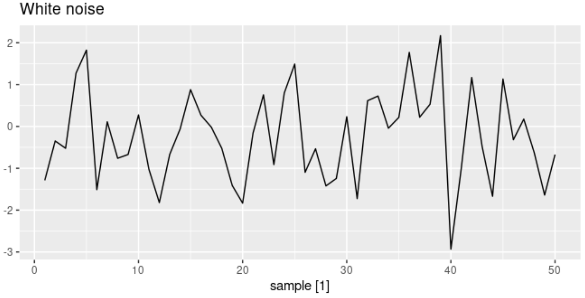
Your time series is not white noise if any of the following conditions are true:
Does your series have a non-zero mean?
Does the variance change over time?
Do values correlate with lag values?
Some tools that you can use to check if your time series is white noise are:
Calculate summary statistics. Check the mean and variance of the whole series against the mean and variance of meaningful contiguous blocks of values in the series (e.g. days,months, or years).
summary(y$wn)
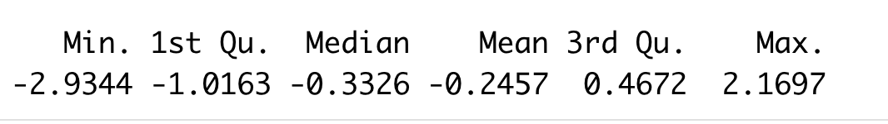
Create an autocorrelation plot. We expect each autocorrelation to be close to zero. Note - they will not be exactly equal to zero as there is some random variation.
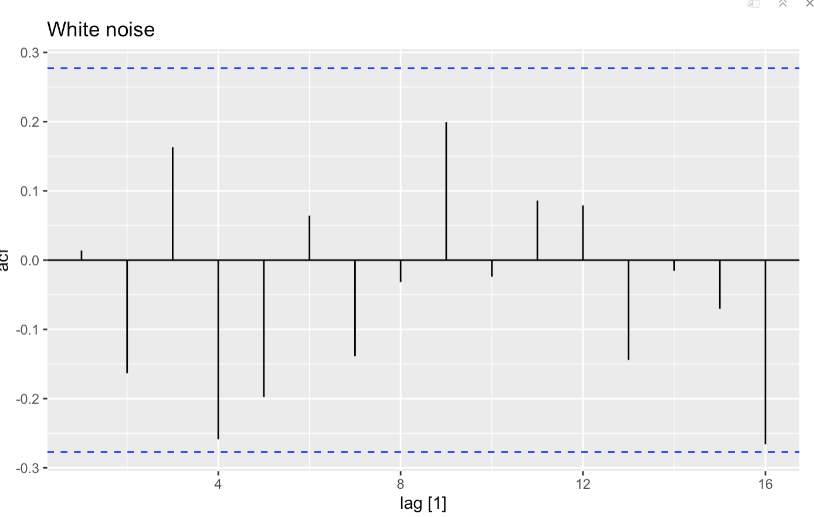
Why Random Walk is Important?¶
A random walk is different from a list of random numbers because the next value in the sequence is a modification of the previous value in the sequence - a dependence from one-time step to the next.
Unlike white noise, random walk has non-zero mean, non-constant std/variance
Random walks typically have:
long periods of apparent trends up or down
sudden and unpredictable changes in direction
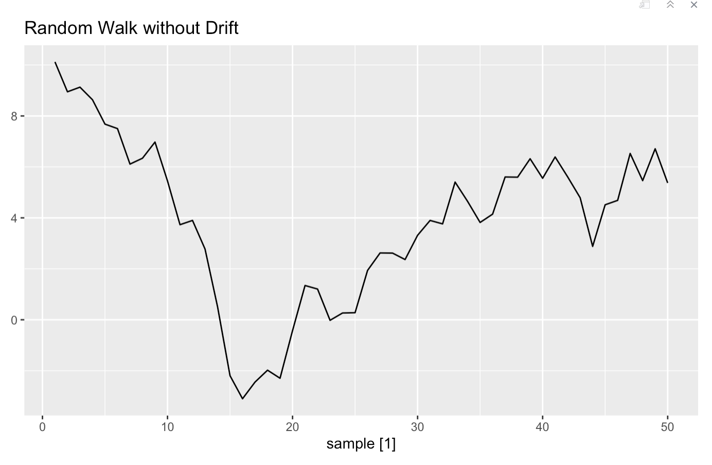
The forecasts from a random walk model are equal to the last observation, as future movements are unpredictable:
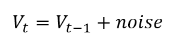
Start with a random number
Randomly select another number and add it to the observation from the previous time step
Repeat step 2 for as long as you like.
We can simulate a random walk model: It takes the number of period (N), initial value (x0), drift (mu). The function use rnorm() to generate random normal variable, and then use cumsum() to get the random walk.
RW <- function(N, x0, mu) {
z<-cumsum(rnorm(n=50)) # we can also specify mean and sd for rnorm
t<-1:N
x<-x0+t*mu+z
return(x)
}
rw_nodrift <- tsibble(sample = 1:50, wn = RW(N=50, 10, 0), index = sample)
rw_nodrift %>% autoplot(wn) + labs(title = "Random Walk without Drift", y = "")
Random Walk with Drift
Drift is often denoted with μ, and in terms of values changing over time, drift means gradually changing into something. For example, stocks may fluctuate constantly, but they might also have a positive drift, i.e., gain an overall gradual increase over time.
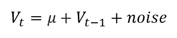
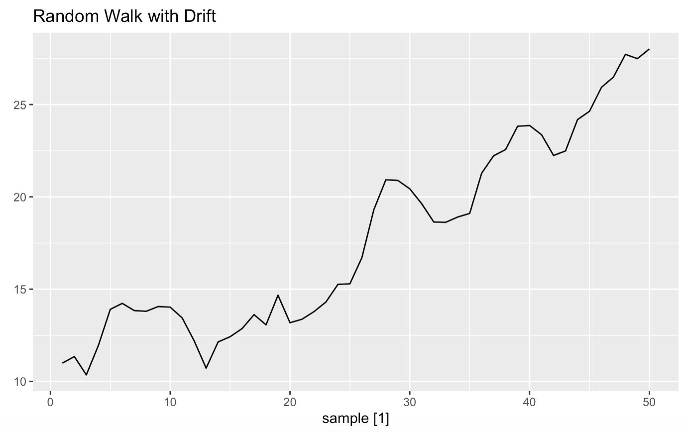
rw_drift <- tsibble(sample = 1:50, rw = RW(N=50, 10, 0.5), index = sample) # we added 0.5 to drift constant
rw_drift %>% autoplot(rw) + labs(title = "Random Walk with Drift", y = "")
Autocorrelation plot (correlogram) shows a strong autocorrelation with the previous observation:
rw_drift %>%
ACF(rw) %>% autoplot()
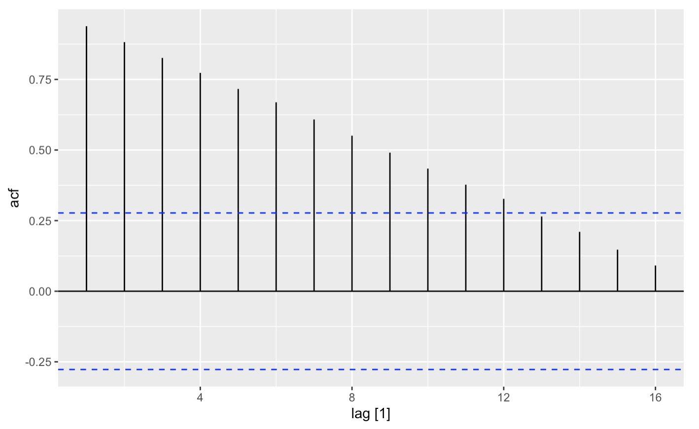
Note
A stationary time series is one where the values are not a function of time. The observations in a random walk are dependent on time, so it is not stationary. In fact, all random walk processes are non-stationary. But not all non-stationary time series are random walks. (Brownlee, Ch.11)
Some tools that you can use to check if your time series is a random walk: differencing and ADF
Differencing¶
Differencing - Computing the differences between consecutive observations - We can make the random walk stationary by taking the first difference: replacing each observation as the difference between the current and the previous value
diff_drift <- mutate(rw_drift, diff = difference(rw, order_by = sample))
diff_drift %>%
autoplot(diff)
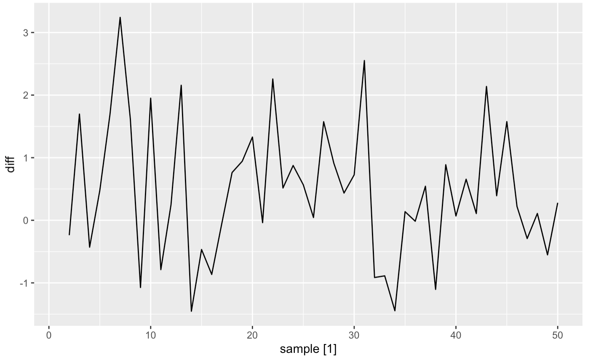
as_tsibble(diff_drift,index = sample) %>%
ACF(diff) %>% autoplot()
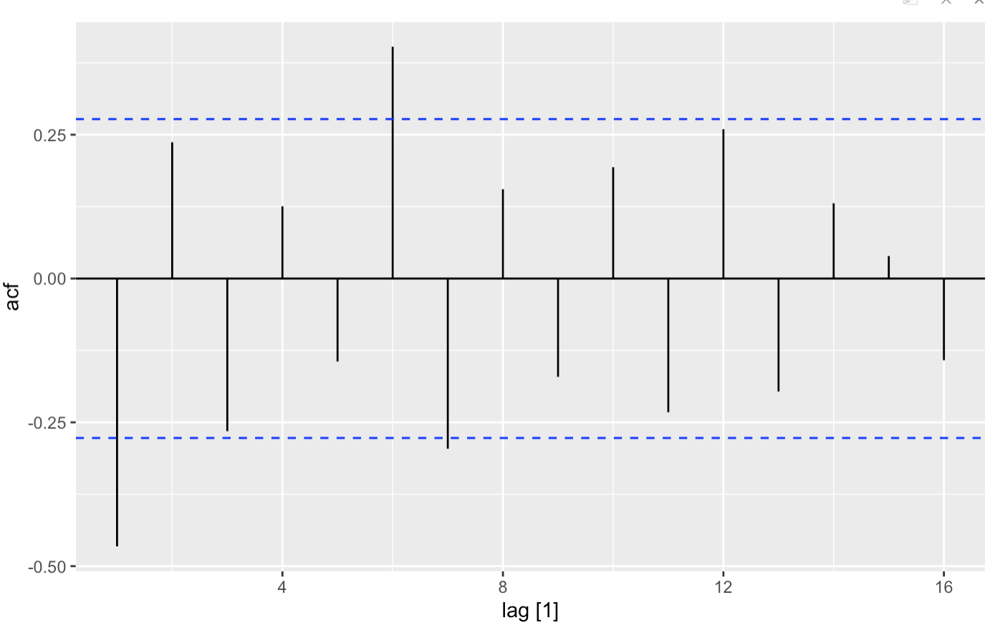 we can see no significant relationship between the lagged observations, as we would expect from the way the random walk was generated.
ADF Test¶
Augmented Dickey-Fuller test is a common statistical test used to evaluate whether a given Time series is stationary or not.
The null hypothesis is that the time series is non-stationary.
library(tseries)
adf.test(rw_drift$wn)
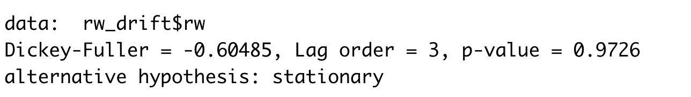
Note
A random walk cannot reasonably be predicted. We can expect that the best prediction would be to use the observation at the previous time step as what will happen in the next time step. Simply because we know that the next time step will be a function of the prior time step. This is often called the naive forecast, or a persistence model (we will talk about in the next section).